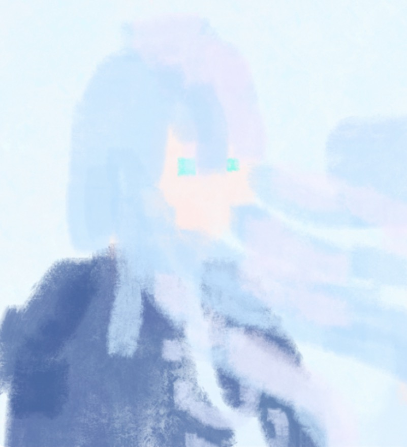

《清理浊化世界》
简介
主角团，群像，大冒险。
异能污染同源，来自自然界的一种物质叫碎灵，人类捕捉到体内能够根据人的不同特质同化出不同效果，用出不同的能力，造成污染的浊灵是碎灵的反面。
普通人通过五感感知世界，而当人类拥有捕捉碎灵的能力，是否意味着能窥见另一个维度的真实？
碎灵研究学院的游逸曦和搭档景知州闯入未公开的碎灵遗址，意外发现了一位被囚禁已久的碎灵生物，秘密却被高傲的天才窥破，为了摆脱威胁，他们不得不联手，与这位神秘的碎灵生物一起踏上冒险之旅，
在一个个被浊灵侵蚀的区域中渐渐拼凑出了隐秘的阴谋，
是谁释放了浊灵，又在操控这一切？
当旧的世界渐渐崩塌，他们是否能改变这一切？